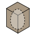
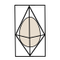

|
Double Pyramid
|
Solid-Sided Rectangular Prism "Shack"
 |
Cube around Double Pyramid
 |
|
|---|---|---|---|
| How well does it distribute force applied to the egg to multiple points? | 4 | 3 (as long as tolerances are right) | 4 (same as double pyramid) |
| How well does it direct force around the egg? Or, how well does it resist compression? | 3 | 4 | 4 |
| Is the egg visible? | Yes | No, at least not without modifications | Yes |
Outer Shell:
| Small, rigid structure | Crush sructure composed of cubes | Rigid structure around egg holder with crush structure around it | Rigid center structure with crushable "spikes" | Crush structure with solid center and spikes | |
|---|---|---|---|---|---|
| How well will it absorb impact and deform? | 2 | 4 | 3 | 4 | 4 |
| How resistant to bouncing is it? (bouncing is bad) | 2 | 4 | 4 | 2 | 3 |
| How well will it protect the inner shell from impact? | 2 | 4 | 3 | 2 | 5 |